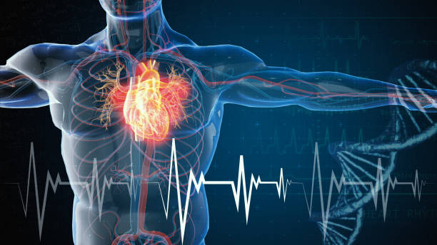

<!DOCTYPE html>
<html lang="en">
<head>
    <meta charset="UTF-8">
    <meta http-equiv="X-UA-Compatible" content="IE=edge">
    <meta name="viewport" content="width=device-width, initial-scale=1.0">
    <title>cardiology</title>
    <link href="C:\Users\129TX\Desktop\python\hms\css\cardiology.css" rel="stylesheet" type="text/css">
</head>
<body>
    <style>
    html{
        
        background:url('back.jpg') no-repeat center center fixed;
        background-size: cover;
        -webkit-background-size:cover;
        -moz-background-size:cover;
        -o-background-size:cover;
    }
</style>
</body>
</html>
<section class="paras">
    <div class="cardiologyimage">
        

    </div>
    <div class="cardiology">
        <h1>cardiology</h1>
        <ul>
       <li> <p> the department of cardiology at hospital was established under the leadership of prof.sujoy B.roy. the department has developed excellent facilities for clicical care and has fully developed facilities for adult and pediatric interventation including coronary interventions, valvuluplasty.device clouser of congenital shunts and electrophysiology serices(including radiofrequently abolation,pacemaker,bi-ventricular pavemaker and cardioverter defibrillator implantation.)Laboratory testing facilities include treadmill testing,holter recording.echicardiography (including transthoracic,teansesophageal,3D and fetal echocardiography).tilt testing for syncope and electrophysiology testing including CARTO system mapping.the department has done pioneering work in the field of rheumatic fever and rteumatic heart dieases including  javenile mital stenosis,coronary artery dieases including angioplasties,arrhythmias cardiomyopathies and congenital heart dieases.</p></li>
       
       </ul>
    </div>
    
</section>